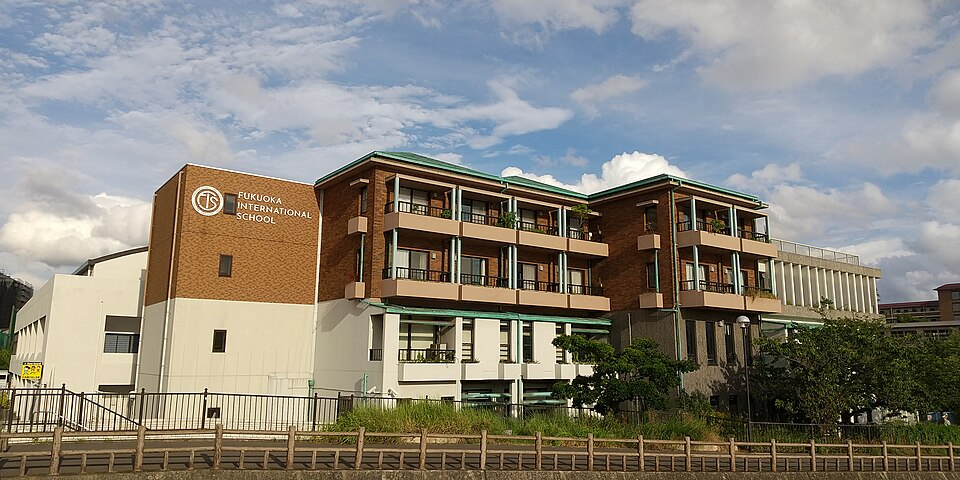

후쿠오카 인터내셔널 스쿨 교사 건물(사와라구 모모치, 2022년 촬영) · 사진: Hirho / Wikimedia Commons, CC BY-SA 4.0
후쿠오카 인터내셔널 스쿨(Fukuoka International School) — 규슈의 IB 세 과정 학교, MYP는 가장 늦게 들어왔습니다
· 약칭 FIS는 다른 나라의 학교(예: 홍콩의 프렌치 인터내셔널 스쿨)도 씁니다. 검색할 때는 "후쿠오카"를 꼭 함께 넣으세요.
· 일본 안의 다른 지역 학교는 따로 정리해 두었습니다 — 오사카 OIS · 고베 캐나디안 아카데미 · 나고야 NIS · 도쿄 인터내셔널 스쿨.
1. 어떤 학교인가 — 기지 학교가 닫힌 자리에서 시작한 학교
후쿠오카 인터내셔널 스쿨(Fukuoka International School, 이하 FIS)은 1972년에 세워진 것으로 알려져 있습니다. 그 무렵 후쿠오카에 있던 미 공군기지 학교가 운영을 멈추면서, 영어로 공부할 학교가 필요해진 가정들을 위해 만들어졌다는 것이 학교의 출발로 소개됩니다.
위치는 후쿠오카시 사와라구 모모치입니다. 시내 서쪽, 해안 쪽 신시가지와 가까운 지역이고, 캠퍼스는 무로미강을 내려다보는 자리에 있는 것으로 안내됩니다. 위 사진이 그 교사 건물입니다. 받는 학년은 유아 과정(Pre-K)부터 12학년까지로, 한 학교에서 유아부터 고등 졸업까지 이어지는 구조입니다.
교육과정은 IB입니다. IB 공식 학교 명부에는 초등 과정(PYP)·중등 과정(MYP)·디플로마(DP) 세 과정이 모두 인가된 것으로 나오고, 학교는 스스로를 규슈에서 처음으로 IB 세 과정을 운영한 학교로 소개합니다. 졸업생이 받는 졸업장은 WASC 인증을 받은 것으로 안내됩니다. (학생 수·학비처럼 해마다 바뀌는 수치는 여기 적지 않습니다. 학교 요강을 직접 확인하세요.)
2. 핵심 — IB가 "위에서부터" 쌓였습니다
보통 IB 학교라고 하면 유치원부터 고등까지 PYP → MYP → DP가 처음부터 나란히 있었을 것이라고 생각하시기 쉽습니다. 이 학교는 그렇지 않습니다. IB 공식 명부에 나오는 인가 시점을 순서대로 놓으면 이렇습니다.
| 과정 | 맡는 구간 | IB 인가 | 옛 자료를 읽을 때 |
|---|---|---|---|
| 디플로마(DP) | 고등 마지막 2년 | 2007년 | 가장 오래돼 자료가 가장 많습니다 |
| 초등 과정(PYP) | 유아~초등 | 2014년 | 2014년 이전 초등 후기는 방식이 다를 수 있습니다 |
| 중등 과정(MYP) | 중학교~고등 초반 | 2020년 | 2020년 이전 중등 후기는 지금과 평가 방식이 다를 가능성이 큽니다 |
여기서 가정이 가져가실 것은 한 줄입니다. 중학생 자녀라면 2020년 이후 자료만 보세요. MYP는 과목마다 기준(criteria)을 나눠 채점하고, 정답보다 풀이 과정과 설명에 점수가 붙는 방식입니다. 그 이전에 이 학교 중등을 다닌 가정의 후기에는 이 방식이 나오지 않을 수 있습니다. "숙제만 잘 내면 된다더라" 같은 오래된 조언을 그대로 믿으면 첫 성적표에서 놀라실 수 있습니다(→ 형성평가·총괄평가).
반대로 고등 학년으로 들어가는 가정에게는 좋은 소식입니다. 디플로마는 이 학교에서 가장 오래 운영된 과정이라, 과목 운영과 일정이 비교적 자리를 잡은 구간이라고 보셔도 됩니다. 다만 어떤 과목이 상위 수준(HL)으로 열리는지는 학교 규모에 따라 해마다 달라질 수 있으니, 원하는 과목이 있으면 꼭 물어보세요(→ IB 점수 구조).
3. 일본 국제학교 졸업장과 대학 — 한 번은 짚고 가세요
일본의 국제학교는 대부분 일본 학교 제도 밖에 있습니다. 그래서 졸업만으로 일본 고교 졸업 자격이 자동으로 생기지는 않습니다. 대신 WASC 같은 국제 인증을 받은 학교의 졸업생은 일본 대학 지원 자격을 인정받을 수 있는 것으로 안내됩니다. 이 부분은 나고야 인터내셔널 스쿨 글에서 자세히 정리했습니다. 핵심만 다시 적으면, 자동이 아니고, 대학과 학부마다 요강이 다릅니다. 일본 대학을 염두에 두신다면 고등 과정에 들어가기 전에 지원할 대학의 요강부터 확인하세요. 한국 대학 특례나 해외 대학을 생각하신다면 특례입학 글을 함께 보시면 됩니다.
4. 한국(주재원) 학생이 겪는 어려움 — "선택지가 하나"라는 조건
첫째, 비교할 학교가 많지 않습니다. 도쿄에서는 여러 학교를 놓고 계열과 위치를 비교하지만, 규슈에서는 영어로 수업하는 유아~12학년 학교의 선택지가 훨씬 좁습니다. 그래서 순서가 달라집니다. "어느 학교가 좋은가"보다 "우리 아이 학년에 자리가 있는가"를 먼저 물어야 합니다. 발령이 확정되기 전이라도 입학처에 학년별 자리와 지원 일정을 문의해 두시는 편이 안전합니다.
둘째, MYP의 기준표 채점입니다. 한국에서 온 중학생이 가장 자주 흔들리는 지점입니다. 수학 답이 맞았는데 점수가 낮고, 과학은 실험 결과보다 설계와 평가를 영어로 설명한 부분에서 점수가 갈립니다. 과제를 받은 날 채점 기준표를 10분 읽히는 것만으로 결과가 달라지는 구간입니다(→ 숙제·과제 관리).
셋째, 생활 언어가 일본어라는 점입니다. 학교 안은 영어지만 학교 밖 생활은 일본어입니다. 아이가 영어를 쓰는 시간이 하루 중 수업 시간에 거의 몰려 있어서, 영어가 늘어나는 속도가 영어권 도시보다 느리게 느껴질 수 있습니다. 집에서 영어 책 읽기 시간을 따로 정해 두시는 것이 도움이 됩니다(→ 리딩 레벨 읽는 법).
5. 그래서 이렇게 준비합니다 — 그리고 후쿠오카라는 조건
- PYP(유아~초등)로 들어간다면 — 영어 읽기의 기준선을 먼저 만듭니다. 첫 해 숫자가 낮게 나오는 것은 정상입니다. 레벨 숫자보다 어디서 멈추는지를 보세요.
- MYP(중등)로 들어간다면 — 수학은 영어 용어와 서술형 풀이, 영어는 문단 구조를 함께 잡습니다. 2020년 이후 자료로만 판단하세요.
- 디플로마(고등 마지막 2년)를 생각한다면 — 과목 조합과 내부 평가 일정을 고등 첫 해 가을에 정리합니다. 디플로마는 2년 누적이라 첫 학기 관리가 마지막 점수를 좌우합니다(→ 과목 신청).
후쿠오카라는 조건은 과외에 유리합니다. 일본은 한국과 시차가 없어 아이가 하교하고 저녁을 먹은 뒤의 시간이 한국 선생님의 수업 시간과 그대로 겹칩니다. 또 후쿠오카는 한국과 가까운 도시라 방학에 한국에 들어왔을 때 집중 수업으로 이어 가기도 쉽습니다. 저희는 학교에서 받은 과제를 함께 여는 방식으로 수업합니다. MYP에서 아이가 어느 기준에서 점수를 잃는지는 과제를 봐야 보이기 때문입니다.
관련 검색어: 후쿠오카국제학교 · 후쿠오카인터내셔널스쿨 · 후쿠오카국제학교수학과외 · 후쿠오카국제학교영어과외 · 규슈국제학교
정리
후쿠오카 인터내셔널 스쿨은 1972년 미 공군기지 학교가 문을 닫은 뒤 세워진 것으로 알려진 사와라구 모모치의 유아~12학년 학교이고, IB 공식 명부상 디플로마(2007)·PYP(2014)·MYP(2020) 세 과정을 갖춘 IB 월드스쿨입니다. 이 글에서 꼭 가져가실 것은 "IB가 위에서부터 쌓인 학교라, 중등 정보는 2020년 이후 자료로만 판단해야 한다"는 점과 "규슈에서는 비교보다 자리 확보가 먼저"라는 점입니다. 아이의 지금 위치가 궁금하시면 30분 무료 수업으로 먼저 확인해 보세요. (학년 구성·개설 과목·입학 일정은 바뀔 수 있으니 반드시 학교 요강을 직접 확인하세요.)